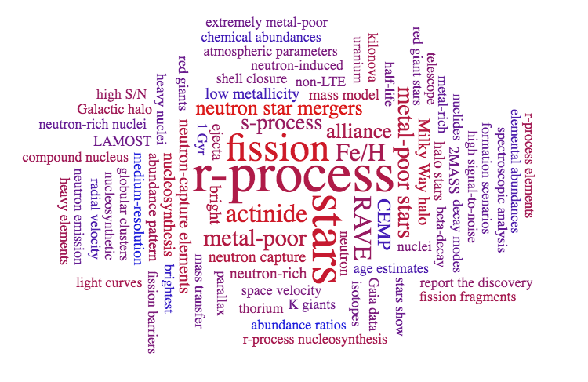

Featured Publications
View full list on ADS2021
A Nuclear Equation of State Inferred from Stellar r-Process Abundances,
Holmbeck, E.M., O'Shaughnessy, R., Delfavero, V., Belczynski, K. (submitted).
Reconstructing Masses of Merging Neutron Stars from Stellar R-Process Abundance Signatures,
Holmbeck, E.M., Frebel, A., McLaughlin, G.C., et al. 2021, ApJ, 909, 21.
2020
The R-Process Alliance: Fourth Data Release from the Search for r-Process-Enhanced Stars in the Galactic Halo,
Holmbeck, E.M., Hansen, T.T., Beers, T.C., et al. 2020, ApJS, 249, 30.
Characterizing r-Process Sites through Actinide Production,
Holmbeck, E.M., Surman, R., Frebel, A., et al. 2020, J. Phys. Conf. Ser, 1668, 15.
2019
Actinide-rich and Actinide-poor r-Process Enhanced Metal-Poor Stars do not Require Separate r-Process Progenitors,
Holmbeck, E.M., Frebel, A., McLaughlin, G.C., et al. 2019, ApJ, 881, 5.
Actinide Production in the Neutron-Rich Ejecta of a Neutron Star Merger,
Holmbeck, E.M., Sprouse T.M., Mumpower, M.R., et al. 2019, ApJ, 870, 23.
2018
The R-Process Alliance: 2MASS J09544277+5246414, the Most Actinide-Enhanced r-II Star Known,Holmbeck, E.M., Beers, T.C., Roederer, I.U., et al. 2018, ApJL, 859, L24.
The R-Process Alliance: First Release from the Southern Search for r-Process Enhanced Stars in the Galactic Halo,
Hansen, T.T., Holmbeck, E.M., Beers, T.C., et al. 2018, ApJ, 858, 92.
β-Delayed Fission in R-Process Nucleosynthesis,
Mumpower, M.R., Kawano, T., Sprouse, T.M., [et al., including Holmbeck, E.M.] 2018, ApJ, 869, 14.
2017
RAVE J203843.2-002333: The First Highly r-Process-Enhanced Star Identified in the RAVE Survey,Placco, V.M., Holmbeck, E.M., Frebel, A., et al. 2017, ApJ, 844, 18.
